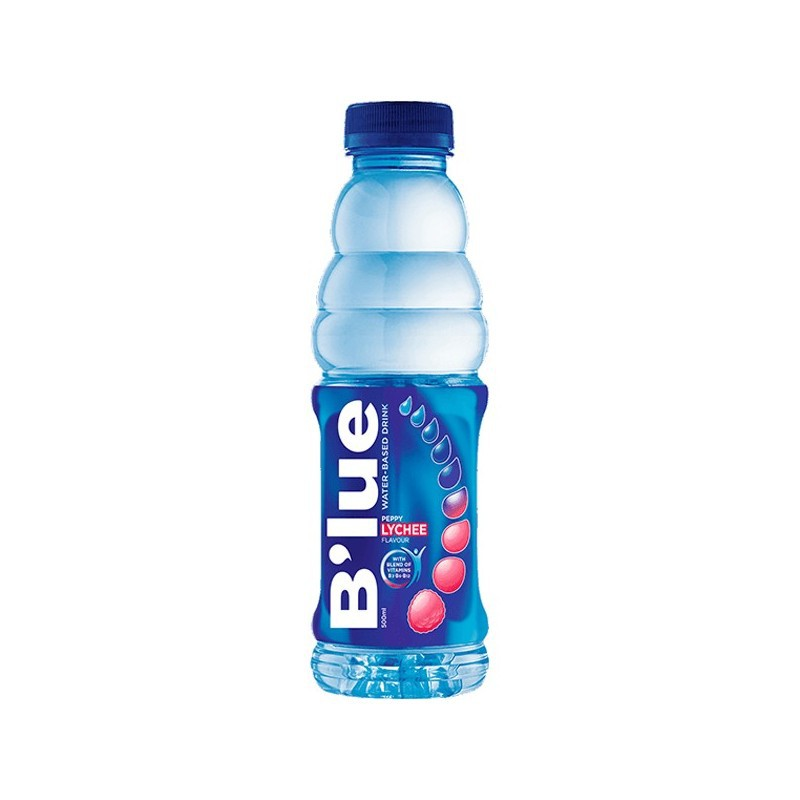

| Name |
Weight/Volume |
Description |
Ingredients Contents |
Image |
| Mogu-Mogu |
320ml |
a sweet fruity drink with chewy coconut jelly cubes. If so, you'll likely enjoy Mogu-Mogu. The add-ons in Mogu-Mogu are called nata de coco, also known as coconut gel. |
Water, Nata de Coco, Fructose, Sugar, Artificial Flavorings, Calcium Lactate, Sodium Hydrogen Sulfate, Sodium Benzoate, Gellan Gum |
|
| Pineapple Juice |
240ml |
100% Pineapple Juice made even more nutritious with the added benefits of powerful anti-oxidants Vitamins A, C & E.
Enjoy the rich, sweet, tangy taste of 100% real fruit Juice. It helps slow down signs of ageing and builds body resistance against diseases.
|
Pineapple, Water, Sugar, other ingredients citric acid, ascorbic acid, and natural flavor |
 |
| Coca-Cola |
330ml |
A sweetened, carbonated soft drink that's flavored with coca leaves, cola nuts, and caramel. It's the world's best selling soda and is also known as Coke.
Coca-Cola was first made in Columbus, Georgia.
|
carbonated water, sugar, caramel color, phosphoric acid, natural flavors, and caffeine |
|
| Dr. Thunder |
2L |
Dr. Thunder is a brand of soda, often marketed as a budget-friendly alternative to more popular colas, particularly Dr Pepper. It is produced by Walmart's Great Value brand, typically sold in large bottles or cans.The soda is available in regular, diet, and sometimes cherry or other variations, depending on the retailer. |
Carbonated Water, High Fructose, Corn Syrup, Caramel Color, Natural and Artificial Flavor, Phosphoric Acid, Potassium Benzoate, Caffeine. |
 |
| Starbucks Coffee |
325ml, 192ml, 405ml |
Starbucks bottled coffee drinks are a convenient, ready-to-drink line of beverages that bring the signature coffeehouse flavor of Starbucks into a portable form. These drinks come in a variety of flavors, often combining coffee with milk, sweeteners, and sometimes additional flavorings like caramel, mocha, or vanilla. |
coffee beans, milk, sugar, and natural flavorings. |
 |
| Fresh Milk |
1000ml |
Nestlé Fresh Milk is a popular brand of dairy milk known for its high-quality, fresh taste. It is sourced from healthy cows and undergoes a careful pasteurization process to ensure safety while preserving its natural goodness. This milk is typically available in different fat content options, including full cream, low-fat, and skim, catering to various dietary preferences. |
100% fresh cow's milk |
|
| Gatorade |
600ml |
Gatorade is a popular sports drink designed to help hydrate and replenish electrolytes lost during physical activity. The main purpose of Gatorade is to replace the fluids and electrolytes that are lost through sweating, helping to maintain proper hydration and energy levels during exercise. It also comes in a variety of flavors, like Fruit Punch, Lemon-Lime, Orange, and more, offering a range of options for different tastes. |
water, sugar, citric acid, salt and electrolytes. |
|
| Tanduay Ice |
330ml |
Tanduay Ice is a popular ready-to-drink alcoholic beverage produced by Tanduay Distillers, Inc., a well-known Filipino brand. It is a flavored alcoholic drink that combines malt liquor with fruit flavors and carbonation, offering a refreshing and easy-to-drink option. Tanduay Ice is typically available in various fruity flavors, such as Lemon, Apple, and Mango, and is often enjoyed by those looking for a sweet, light alcoholic beverage with a lower alcohol content than traditional hard liquors. |
malt liquor, carbonated water, fruit juices and flavors, sugar, citric acid |
|
| Heineken |
330ml |
Heineken is a well-known Dutch lager beer that has gained international recognition for its distinctive taste and iconic green bottle. First brewed in 1864 by Gerard Adriaan Heineken in Amsterdam, Heineken is a premium lager that is recognized for its smooth, crisp, and slightly bitter flavor profile. It's a popular choice among beer drinkers around the world and is often associated with high-quality brewing. |
Water, malted barley, hops, yeast |
 |
| Blue |
500ml |
Blue (Smirnoff Ice Blue) is typically characterized by its sweet, citrusy flavor, with a blend of fruity notes and a clean, crisp finish. It's often described as being refreshing and easy to drink, with a slightly tangy or lemon-lime-like taste depending on the variant. The drink is usually sparkling, with carbonation that adds a fizzy sensation, making it a popular choice for those who enjoy sparkling beverages. |
water, natural flavors, carbonated water, citric acid, vitamin c, vitamin premix |
 |